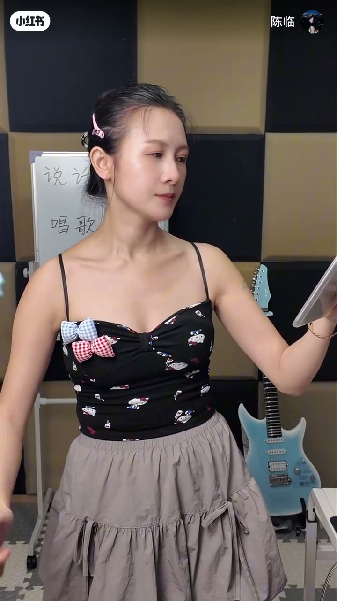
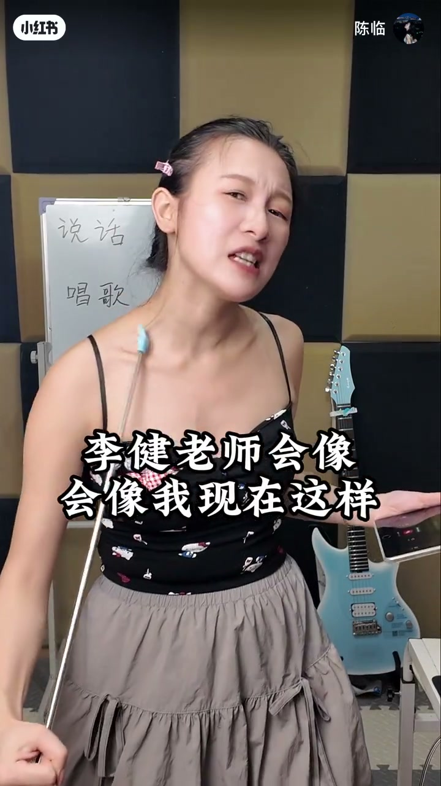
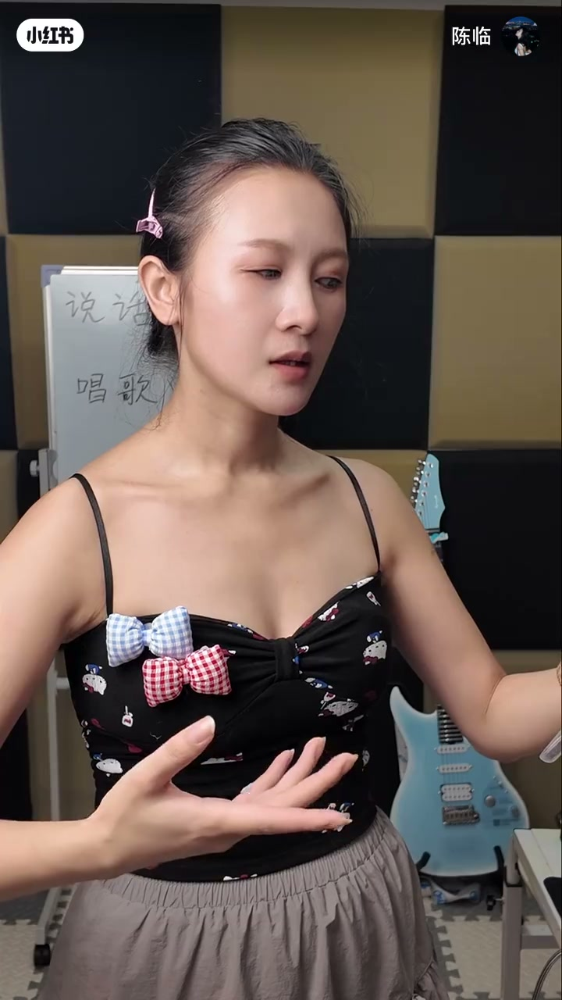
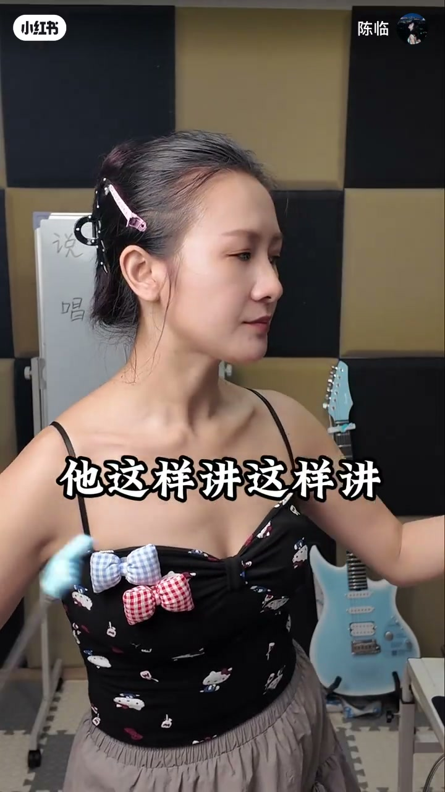
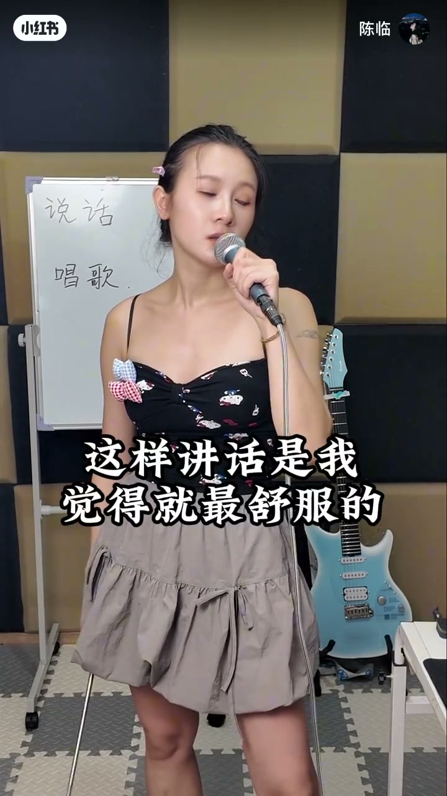
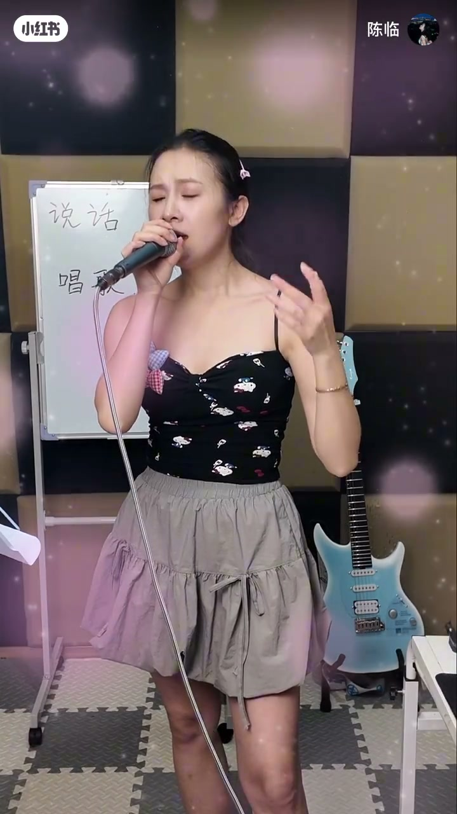

内容要点
声乐老师「陈临」用李健《传奇》片段做对比：故意用不像李健日常说话的腔去唱，立刻「不像那回事」。原则不是边说边唱，而是唱歌时保持说话般的放松——尤其放松下巴；不同说话口腔感会迁移到唱歌。白板并写「说话 / 唱歌」。Whisper 约在 1分55秒后中断，后半以画面与笔记文案补全主旨。
知识结构
用夸张/不像李健说话的声音唱「你和我…」，听众一听就不对。
唱歌要像说话一样；先放松下巴。
你怎么讲话，往往就会怎么唱歌；模仿像，常因模仿了说话与口腔感。
白板对照说话/唱歌；找到最舒服的讲话方式再迁到演唱。
先找到自然说话的下巴与口腔状态，再把同一状态带进音高——模仿「像」往往先像在说话，而不只是像旋律。
00:00-01:20不像说话，就不像李健
有人问老师「是不是相似」。她先用刻意别扭的声音唱《传奇》开头，再问：像那回事吗？李健平时会这样扎扎哄哄说话吗？不会——所以第一原则：唱歌的时候要像说话一样，并放松下巴。



01:20-04:08说话方式决定唱歌口腔感
她切换几种说话方式，再接同一句歌词，说明「有的人这样讲话，就会这样唱歌」。这也解释为何有人模仿别人唱歌特别像——往往先模仿了对方说话与口腔里的感觉。
中后段白板写着「说话」「唱歌」，字幕强调「这样讲话是我觉得就最舒服的」。笔记补充：不是让你边说话边唱歌，而是声音形态与情绪各异，但底层仍要自然。Whisper 提前结束，后半以示范画面为主。



完整转录（39段）
以下文本由 Whisper medium 模型自动转录，可能存在少量识别误差，已尽可能修正。
有人问了老师是不是
相似吗
来,用这个声音来唱一下李健老师的歌
你和我
来自不同的人生
来自于
陌路偶然的相逢
像那回事吗
李健老师他平时就不是这么说话的呀
李健老师会像我现在这样说话扎扎哄哄的吗
会吗
不会呀,你去听
第一
唱歌的时候要像说话一样
唱歌的时候要像说话一样
你要放松自己的下巴
第一
第一,唱歌
你和我
来自不同的人生
来自于
陌路偶然的相逢
好,还有人是这样说话的
他就会这样唱歌
这样说话
你和我
来自不同的人生
有的人他就要讲话
他就要讲这样讲
你和我
来自不同的人生
这也就是为什么
你会听到很多人
他去模仿别人唱歌能模ув的特别像
为什么
他模仿他说话呀
模仿他唱歌的时候那种感觉呀
在口腔里面那种感觉是不一样的
有没有做过声音